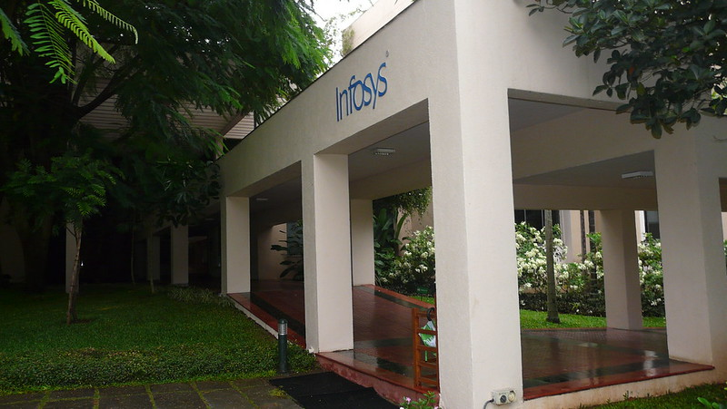

As of my last knowledge update in January 2022, Infosys is a multinational corporation that provides consulting, technology, outsourcing, and various IT services. The company has a significant presence in Pune, India. Pune is one of the key locations where Infosys has established development centers and offices.
In Pune, Infosys operates multiple facilities, and these facilities are typically engaged in software development, application maintenance, testing, and other IT-related services. The Pune development center

Infosys in Pune, like other locations, provides a range of IT services. These services include:
Software Development: Infosys engages in software development projects, creating custom solutions, and developing applications for its clients.
Application Maintenance: They often provide ongoing support and maintenance services for the applications and systems they develop.
Quality Assurance and Testing: Infosys is involved in testing and quality assurance to ensure the reliability and functionality of software applications.
Consulting Services: Infosys offers consulting services to help clients improve their business processes, implement technology solutions, and optimize their operations.
IT Outsourcing: Infosys is known for its outsourcing services, where they manage specific IT functions or entire IT operations on behalf of their clients.
Digital Transformation: Infosys assists clients in their digital transformation journeys, helping them adopt new technologies and innovate their business processes.
Cloud Services: The company provides cloud computing services, helping clients migrate to the cloud, manage cloud infrastructure, and leverage cloud-based solutions.

nfosys, being a global consulting and technology services firm, provides a variety of consulting services across different domains. In Pune, as in other locations, Infosys likely offers consulting services that may include:
Business Consulting: Advising clients on business strategies, operations, and organizational improvements to enhance overall performance.
Digital Transformation Consulting: Helping clients leverage digital technologies to transform their business processes, enhance customer experiences, and stay competitive in the digital age.
IT Consulting: Providing guidance on technology strategies, infrastructure management, and IT governance to align technology with business goals.